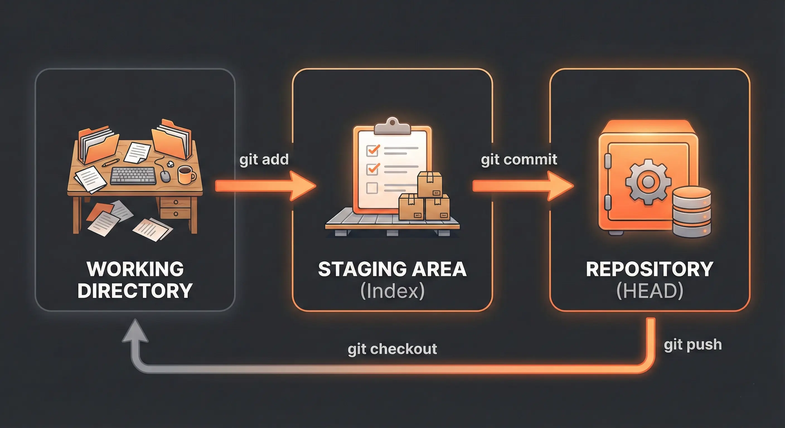
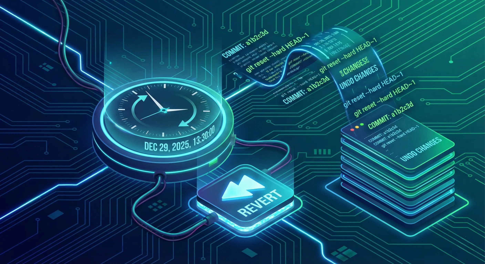
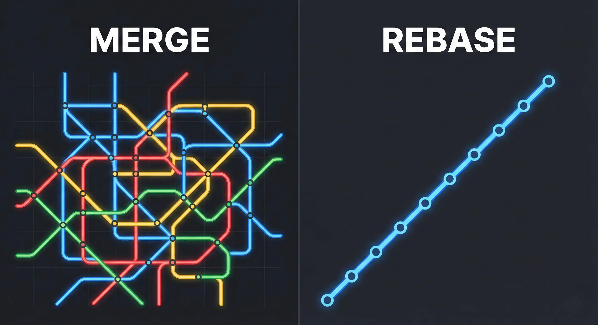

I used to save my projects as final_project.zip, final_project_v2.zip, and final_project_REAL_final.zip. It was a mess. Then I learned Git. It’s not just a tool; it’s a safety net that lets you experiment without fear. This guide covers the commands I actually use daily.
Table of Contents
- What is Git & Why Use It?
- Understanding the Three Trees
- Getting Started: Your First Repository
- Branching & Basic Workflows
- More Essential Commands
- Undoing Mistakes: Your Safety Net
- Advanced Git Features
- A Note on Merge Conflicts
- Collaborating with Pull Requests
- Automating with GitHub Actions
- Best Practices
- Conclusion
What is Git & Why Use It?
There's often confusion here. Git is the engine on your computer that tracks changes—think of it as a local time machine for your code. It allows you to save snapshots of your project and revert back if you break something.
GitHub is the social network where you upload those changes to share with others. It hosts your Git repositories in the cloud.
You can use Git locally without ever touching GitHub, but together they are the industry standard for collaboration.
Understanding the Three Trees
The concept that finally made Git click for me was the "Three Trees" architecture. It explains why we have to add before we commit.

- Working Directory: The files you see in your folder right now. This is your sandbox where you make edits.
- Staging Area (Index): This was the tricky part for me. Think of it as a loading dock. You pick specific files to put on the truck (stage) using
git addbefore the truck leaves. - Repository (.git directory): The permanent history. When you use
git commit, you take the files from the Staging Area and save them into the repository history.
This process gives you control. You might edit 10 files, but only want to commit 3 of them related to a specific bug fix. The staging area lets you do that.
Getting Started: Your First Repository
Let's walk through the setup I do whenever I get a new laptop or start a fresh project.
First-Time Setup: Configure Git
You only need to do this once. It tells Git who to blame (or credit!) for the code changes. Open your terminal and run:
git config --global user.name "Your Name"
git config --global user.email "youremail@example.com"1. Initialize a Repository
Navigate to your project folder in the terminal. Running this command wakes Git up and tells it to start watching your files. It creates a hidden .git folder.
git init2. Add and Commit Changes
This is the two-step dance I mentioned earlier. First, stage the files. Then, save the snapshot with a message describing what you did.
git add .
git commit -m "Initial commit"3. Connect to GitHub
Now, let's get this code off your laptop and onto the web. You'll need to create an empty repo on GitHub first, then link it to your local folder:
git remote add origin https://github.com/username/repository.git
git push -u origin main4. Cloning an Existing Repository
If you're joining a team or forking a project, you start here. This pulls down the entire history so you can start working immediately.
git clone https://github.com/username/repository.gitBranching & Basic Workflows
I used to code everything on the main branch until I broke my login feature an hour before a deadline. Now, I use branches for everything. A branch lets you work on a new feature in isolation. If it works, great. If not, delete the branch and your main code remains untouched.
git checkout -b feature-branch
# Make changes, then commit
git add .
git commit -m "Add new feature"
git push origin feature-branchMore Essential Commands
These are the commands I type almost reflexively:
git status: I run this constantly. It tells me what's staged, what's modified, and what branch I'm on.git log: Shows the history. Useful for seeing who changed what and when.git pull: Before I start coding for the day, I always run this to make sure I have the latest changes from my team.
Undoing Mistakes: Your Safety Net
I've panicked more times than I can count after deleting the wrong file. Git usually has a way to fix it. Here are my go-to fixes:

- Discarding Local Changes: If I mess up a file and just want to go back to the last saved state:
git checkout -- <file-name> - Unstaging a File: If I accidentally added a config file I didn't mean to commit:
git reset HEAD <file-name> - Amending the Last Commit: I use this all the time when I make a typo in a commit message or forgot to add one file to the previous commit:
git commit --amend
Advanced Git Features
As I got more comfortable, these tools became part of my workflow:
Git Stash
Imagine you're working on a feature but need to switch branches to fix a critical bug. You're not ready to commit your half-finished work. git stash pauses your work and saves your changes temporarily so you can switch contexts.
git stash # Save changes
git stash pop # Bring changes back laterRebase vs. Merge
This is a hot topic. When combining branches, you have two options:
- Merge: Creates a "merge commit" that ties two histories together. It's non-destructive but can clutter history. I stick to this for shared branches.
- Rebase: Moves your entire branch to begin on the tip of the master branch. It creates a linear, clean history but rewrites history. I use this for my local feature branches to keep things tidy.

git rebase mainA Note on Merge Conflicts
The first time I saw a merge conflict, I thought I broke the repository. I didn't. It just means Git needs a human to decide which version of a line is correct. Open the file, look for the <<<<<<< markers, pick the code you want, and delete the markers. It's a normal part of collaboration.
Collaborating with Pull Requests
In open source and internships, you rarely push directly to main. You open a Pull Request (PR). This is a formal way of saying, "I've completed my work, please review it and merge it into the main branch."
This is where the real learning happens. Your teammates can review your code, leave comments, and suggest changes. It's the best way to catch bugs and improve your coding style before it hits production.
Automating with GitHub Actions
I used to manually deploy my sites. Now, I use GitHub Actions. It allows you to automate workflows directly in your repo. For example, you can set it up to automatically run your tests every time you push code, or deploy your website to Netlify whenever you merge a PR. It feels like magic.
Best Practices
- Commit Often: Don't wait until the end of the day. Small commits are easier to fix if something goes wrong.
- Use .gitignore: I learned this the hard way after accidentally uploading my API keys. Create a
.gitignorefile to exclude sensitive information (like.envfiles) or heavy folders (likenode_modules).# .gitignore example node_modules/ .env *.log - Learn Pull Requests: Even on personal projects, I use PRs to practice the workflow.
Secure Authentication with SSH
Typing my password every time I pushed was annoying. Setting up SSH keys took 10 minutes but saved me hours in the long run. It allows you to push and pull code securely without entering credentials every time.
Conclusion
Git has a steep learning curve. I struggled with it for weeks. But once you understand the flow—add, commit, push—it becomes muscle memory. It's the most important tool in my developer toolkit, and mastering it early puts you ahead of the curve.
Check out Git’s official documentation, GitHub’s Learning Lab, or freeCodeCamp’s Git tutorials for deeper insights. Visit my GitHub profile to see my repositories in action!
Have questions about Git or GitHub? Reach out via the contact form below or explore my other blog posts for additional insights!
Disclaimer: This article was written and edited by Pranav R. AI tools were used for assistance with drafting and visual assets.